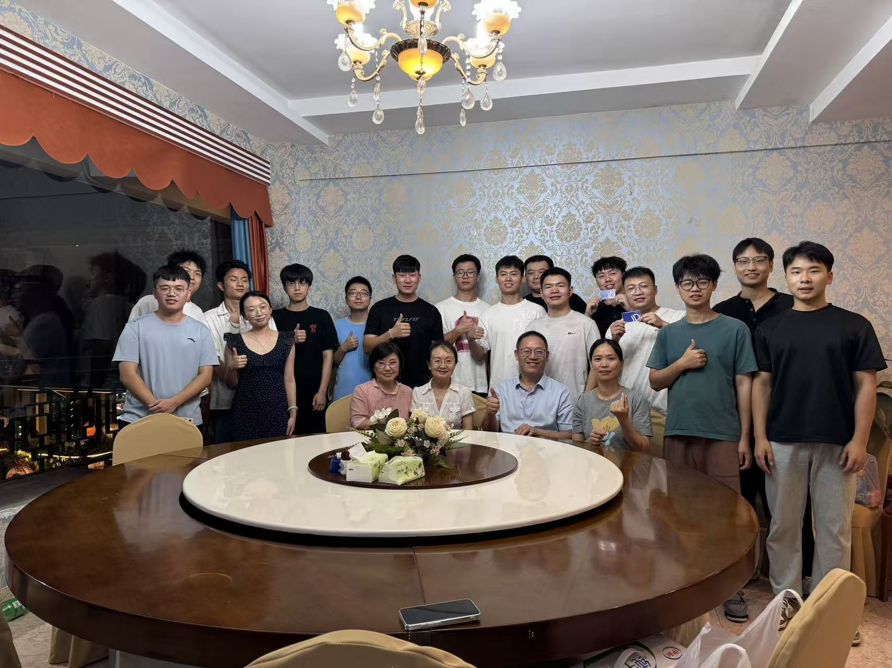
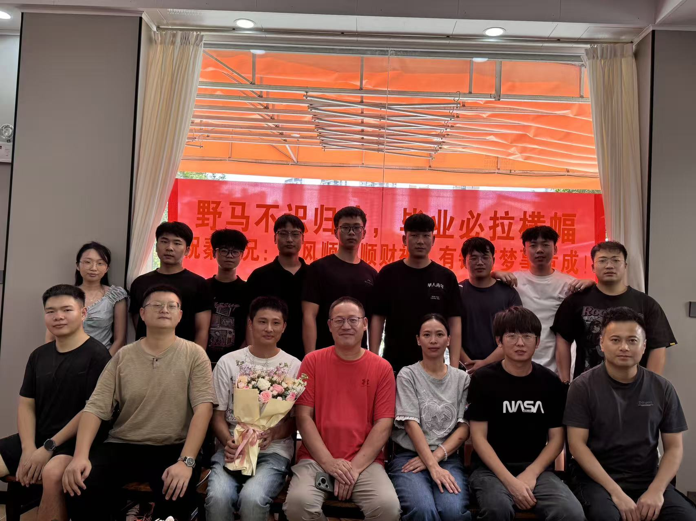

汽车人工智能，汽车智能驾驶与汽车智能控制
Automotive Artificial Intelligence Laboratory
厦门理工学院特聘教授、首席科学家
新能源汽车智能驾驶与智能控制
申水文，厦门理工学院特聘教授、厦门金龙汽车和厦门国创智能化方向首席科学家（兼），入选国家海外高层次人才引进计划创新长期项目，福建省和厦门市A类高层次人才。长期从事新能源汽车智能驾驶与智能控制领域的技术研究及产品开发，是较早从事汽车操作系统开发、车辆矢量控制、零惯性传动和汽车人工智能研究的重要学者之一。

